264 — Proyecto: centro de operaciones de CloudShop
Parte: 21 — Operación cloud, automatización y respuesta a incidentes
Nivel: avanzado · Horas estimadas: 8
Laboratorio: capstone · Estado: EXECUTABLE_CORE
🎯 Propósito
Construir el centro de operaciones de CloudShop con todo lo de la parte 21 y comprobarlo. La clase da el encargo, el orden, el entregable y las pruebas negativas. Y cierra la parte 21: corrige las cinco predicciones de la clase 252 —dos acertadas y tres a medias—, actualiza el recuento de leyes, añade la ley 30 y escribe la hipótesis de la parte 22.
📚 Resultados de aprendizaje
Al finalizar podrás:
- Construir una operación completa en el orden que evita rehacer.
- Comprobar con las pruebas negativas acumuladas de la parte.
- Medir la operación con cifras que resistan una revisión.
- Corregir las cinco predicciones de la clase 252 con evidencia.
- Escribir la hipótesis de la parte 22 en forma refutable.
🧩 Conceptos centrales
| Concepto | Comprensión verificable |
|---|---|
centro de operaciones |
El conjunto de inventario, señales, guardia, procedimientos, cambio y ensayos que hace operable un sistema. |
ley 30 |
Toda tarea manual lleva un juicio que nadie escribió; automatizarla lo elimina sin avisar. |
orden por dependencia |
Inventario primero, automatización al final. No se puede automatizar lo que no se sabe que existe. |
prueba negativa de parte |
Comprobación acumulada de las once clases, ejecutada sobre la operación entera. |
trabajo repetitivo |
Tarea manual, sin valor duradero, que crece con el tamaño del sistema. |
hipótesis de parte |
Afirmación refutable escrita antes de estudiar, que la parte siguiente corrige con evidencia. |
🧠 Modelo mental
Operar es controlar cambios bajo incertidumbre: inventario, señal, diagnóstico, acción reversible y aprendizaje deben formar un ciclo cerrado.
Aplicado a esta clase, separa siempre cuatro planos: intención (qué necesita el usuario), configuración (qué declaramos), estado observado (qué existe de verdad) y evidencia (cómo sabemos que cumple). Confundirlos produce diseños que se ven correctos en un diagrama pero fallan al operar.
🗺️ Flujo de razonamiento

📖 Desarrollo
1. El encargo, el orden y el entregable
El encargo. CloudShop opera 41 servicios en tres nubes, con un equipo de plataforma de nueve personas y equipos de producto que despliegan solos. Hay que dejar la operación en un estado en que una persona que entra hoy pueda estar de guardia en seis semanas.
El orden, por dependencia:
1 INVENTARIO Y PROPIEDAD clase 253
qué hay, en qué cuenta, de quién es, para qué sirve
→ sin esto, todo lo demás actúa sobre una parte del
sistema y nadie sabe cuál
2 PARCHEO Y CONFIGURACIÓN clase 254
imágenes construidas, no retocadas; configuración
declarada y reconciliada
3 COPIAS Y RESTAURACIÓN clase 255
copias inmutables, y restauración PROBADA con reloj
4 ACCESO SIN CREDENCIALES PERMANENTES clase 256
sesiones auditadas, elevación temporal, sin claves
compartidas
5 ALERTAS Y GUARDIA clase 257
se alerta por síntomas del usuario; rotación
sostenible; roles separados
6 TRIAJE clase 258
línea de cambios única y orden de descarte
7 PROCEDIMIENTOS Y REMEDIACIÓN clase 259
ejecutables; automáticos solo donde procede
8 GESTIÓN DEL CAMBIO clase 260
lotes pequeños, vuelta atrás probada, sin comité
9 ENSAYOS clase 261
de mesa hacia arriba, con hipótesis
10 CAPACIDAD Y CUOTAS clase 262
recurso limitante, codo medido, inventario de cuotas
11 ASISTENCIA AUTOMATIZADA clase 263
reúne y ordena; no concluye ni ejecuta
Y por qué este orden y no otro:
los pasos 1 a 4 son el ESTADO del sistema
los pasos 5 a 8 son la RESPUESTA
los pasos 9 a 11 son la MEJORA
→ y hacer la respuesta sin el estado produce guardias que
no pueden actuar
→ y hacer la mejora sin la respuesta produce ensayos que
descubren lo obvio
→ intentar el paso 7 antes del 6 es el error más común: se
automatiza sin saber diagnosticar
El entregable, que es lo que se evalúa:
1 inventario generado automáticamente, con dueño por
recurso y cobertura medida
2 la línea de cambios única, de todas las fuentes
3 el catálogo de alertas, con la prueba de accionabilidad
pasada
4 el calendario de guardia con la carga por turno medida
5 los procedimientos, en grado 2 o 3, con fecha de última
ejecución
6 el inventario de automatizaciones, con condiciones,
límite e interruptor
7 las cuatro métricas de entrega, medidas
8 el inventario de cuotas, por cuenta y región, con
alertas
9 el registro de ensayos, con hipótesis y acciones
cerradas
10 y el registro de decisiones: qué NO se automatizó y por
qué
2. Las pruebas negativas de la parte
Cada clase dejó una comprobación que falla en la mayoría de las organizaciones. Aquí se ejecutan todas sobre el sistema entero.
clase 253 coge 20 recursos al azar del inventario
→ ¿los 20 tienen dueño identificable HOY?
→ y a la inversa: coge 20 recursos de la
consola; ¿están en el inventario?
clase 254 coge una máquina de producción
→ ¿cuánto hace que se creó su imagen?
→ ¿hay algo instalado a mano en ella?
clase 255 RESTAURA una copia, con reloj
→ ¿cuánto tardó y qué se perdió?
→ ¿la copia sobrevive a quien tiene permisos de
administrador?
clase 256 ¿queda alguna credencial permanente?
→ busca claves de acceso con más de 90 días
→ ¿alguien puede entrar sin dejar rastro?
clase 257 coge las 20 últimas alertas
→ ¿qué hizo quien las recibió?
→ si en más de 3 la respuesta es «nada»,
el catálogo está roto
clase 258 ¿existe la línea de cambios única?
→ pide «todos los cambios de la última hora»
→ si hay que mirar en más de un sitio, no existe
clase 259 coge 5 procedimientos al azar y EJECÚTALOS
→ ¿cuántos funcionan íntegros?
clase 260 ¿cuál es la mediana de cambios por despliegue?
→ ¿cuándo se ejecutó la última vuelta atrás?
→ ¿qué porcentaje de cambios se declara urgente?
clase 261 retira una instancia de producción, ahora
→ ¿pasa lo que la hipótesis dice?
clase 262 «si el tráfico se duplica, ¿qué se rompe
primero y en cuánto tiempo?»
→ y comprueba las cuotas de la región de
conmutación
clase 263 coge una conclusión del asistente
→ ¿enlaza a la evidencia?
→ ¿dice qué fuentes no consultó?
Y la prueba que resume la parte entera:
LA PRUEBA DE LAS SEIS SEMANAS
coge a alguien que entró hace seis semanas
ponle un incidente de mesa clase 261
y observa
¿encuentra el inventario y el dueño?
¿encuentra la línea de cambios?
¿encuentra el procedimiento y funciona?
¿tiene los permisos para ejecutarlo?
¿sabe a quién escalar y cuándo?
¿sabe qué comunicar y a quién?
→ si falla cualquiera, la operación depende de las
personas que ya estaban
→ y eso es exactamente lo que se estaba intentando
evitar
3. Corrección de las cinco predicciones de la clase 252
La corrección, con evidencia y sin adornos.
1. «los problemas de operación no son de herramientas sino
de INVENTARIO Y DE DUEÑO: la mayoría de los hallazgos
serán cosas que existen y que nadie sabía que existían»
CORRECTA, Y MÁS AMPLIA DE LO PREVISTO. Acertamos la
dirección y nos quedamos cortos en el alcance: lo
desconocido no fueron solo recursos. Fueron cuotas
—la región de conmutación permitía el 3,2 % de la
capacidad que el plan daba por hecha—, procedimientos
—19 de 34 rotos—, permisos —el rol de guardia no podía
ejecutar el paso 4—, y comportamientos —una caché «tem-
poral» de sesiones en memoria llevaba siete meses.
El inventario que faltaba no era el de máquinas: era el
de SUPUESTOS.
2. «la práctica que más diferencia producirá será la más
aburrida: retirar. Y será la que menos se haga»
FALLIDA EN LA PRIMERA MITAD, CORRECTA EN LA SEGUNDA.
Retirar produjo mucho: 245 alertas eliminadas de 412,
nueve procedimientos obsoletos, un 22 % del tráfico al
quitar el sondeo del navegador. Pero la práctica que más
diferencia produjo, medida, fue otra igual de aburrida:
REDUCIR EL TAMAÑO DEL LOTE. Pasar de 14 cambios por
despliegue a 1 llevó el tiempo de recuperación de 47 a
11 minutos y la tasa de fallo del 1,8 % al 0,6 %.
Y la segunda mitad sí: nadie pidió nunca ninguna de
las dos.
3. «la automatización de la remediación fracasará donde el
procedimiento no estuviera antes escrito y probado»
CORRECTA PERO INCOMPLETA, Y LO QUE FALTABA IMPORTA MÁS.
Sí fracasó donde no había procedimiento probado. Pero la
remediación que causó el incidente —retirar instancias
no sanas— tenía el procedimiento escrito, probado y
ejecutado a mano decenas de veces. Falló porque lo que
una persona hace al ver que fallan nueve de once no está
escrito en ninguna parte: es el juicio de PARAR. Y ese
juicio se pierde al automatizar sin que nadie lo note.
4. «el tramo que dominará el tiempo total no será
diagnosticar ni arreglar: será DECIDIR y COMUNICAR»
CORRECTA Y CONFIRMADA CON CIFRAS. Un incidente resuelto
técnicamente en 17 minutos consumió 1 h 21 de
comunicación posterior. Y en el ensayo sin las personas
clave, de los 31 minutos hasta conmutar, 14 fueron
buscando el permiso y 9 esperando a quien podía
autorizarlo: 23 de 31 minutos decidiendo, no
diagnosticando.
5. «más de la mitad del trabajo repetitivo se podrá
eliminar retirando o corrigiendo la causa, en vez de
automatizándolo; y el equipo intentará automatizarlo
primero»
FALLIDA EN LA CIFRA, ACERTADA EN LA CONDUCTA. Del
trabajo repetitivo identificado, el 38 % se eliminó en
la causa y el 62 % se automatizó: por debajo de la mitad
que predijimos. Y la conducta, exacta: en los tres casos
donde acabó eliminándose la causa, la primera propuesta
del equipo había sido automatizar. La fuga que se
reiniciaba cada seis horas tardó cuatro meses en
arreglarse, y solo porque el contador de actuaciones la
delató.
Marcador: dos correctas, tres a medias. Y el fallo de la tercera es el que obliga a escribir una ley: acertamos que la automatización fracasa donde falta el procedimiento, y no vimos que también fracasa donde el procedimiento está completo, porque lo que no está escrito no es el paso sino la decisión de no darlo.
4. Recuento de leyes, ley 30 e hipótesis de la parte 22
El recuento de leyes, cerrada la parte 21.
ley 13 lo que no se mira deja de funcionar en silencio 66
ley 15 la señal existe y nadie la mira 56
ley 22 un procedimiento nunca ejecutado no funciona 53
ley 14 el coste se decide al crear, no al pagar 39
ley 16 un control que estorba se rodea 38
ley 20 lo que no tiene dueño se filtra y se desperdicia 37
ley 25 lo provisional sobrevive a su motivo 33
ley 21 el acoplamiento vive en quién escribe 33
ley 26 el valor por defecto sirve a la demostración 27
ley 23 la capacidad la limita lo que ya se mantiene 22
ley 17 se optimiza la medida, no el objetivo 19
ley 24 lo que no está en el diagrama no se analiza 16
ley 27 un control solo actúa sobre lo que cambia 13
ley 19 la compensación hace invisible el fallo 11
ley 18 lo asíncrono traslada la garantía, no la elimina 11
ley 28 donde se paga por uso, cada defecto es una factura 10
ley 29 un fallo de datos no da error: da otro número 8
ley 30 automatizar elimina un juicio que nadie escribió 6
Y la ley que la parte 21 obliga a escribir:
LEY 30
toda tarea manual lleva un juicio que nadie escribió;
automatizarla lo elimina sin avisar
apariciones en esta parte 6
clase 258 la pregunta «¿es una de N?» no estaba en
ningún procedimiento y resolvió en 22 minutos
un caso de nueve días
clase 259 retirar instancias no sanas era correcto; lo
que faltaba era la decisión de no hacerlo
cuando fallan nueve de once
clase 259 en modo sombra, dos de siete automatizaciones
habrían actuado en momentos en que una
persona no lo habría hecho
clase 261 sin las dos personas que más sabían, la misma
conmutación tardó 26 minutos más: la
diferencia era juicio, no conocimiento
clase 262 escalar el servicio era la respuesta correcta
y multiplicó las conexiones contra el recurso
limitante
clase 263 el asistente concluyó sin decir qué no había
mirado; una persona habría dicho «no tengo
acceso a los cambios de red»
y lo que la distingue de la ley 22
la 22 dice que un procedimiento no ejecutado no funciona
la 30 dice algo peor: que un procedimiento PERFECTAMENTE
ejecutado a mano durante años sigue estando incompleto,
porque la parte que lo hace seguro nunca se escribió
→ y por eso el modo sombra vale tanto: es la única forma
de descubrir el juicio ausente antes de perderlo
clase 259
La hipótesis de la parte 22 (clases 265 a 276, especialización, certificación y carrera), escrita antes de estudiarla:
1. las certificaciones correlacionarán con conseguir
entrevistas y no con resolver problemas; y el hueco
estará justo donde no se puede examinar por opción
múltiple: decidir con información incompleta
ley 17
2. la especialización que peor envejecerá será la atada a
un producto, y la que mejor, la atada a una RESTRICCIÓN
—red, datos, coste, seguridad—, porque las restricciones
sobreviven a los productos que las gestionan
3. buena parte del consejo de carrera tratará de
visibilidad y no de destreza; será incómodo y será
cierto, y lo medible será que lo que predice una
promoción no es lo que predice resolver un incidente
4. lo que el mercado paga en multinube no será saber tres
nubes: será saber una a fondo y poder TRADUCIR; y quien
sepa las tres por encima rendirá peor que quien sepa una
y entienda el modelo ley 24
5. y una refutable con cifra: **más de la mitad de lo
enseñado en este programa será transferible entre nubes
sin cambios, y menos de una quinta parte será sintaxis
de un producto concreto**; y los temarios de
certificación invertirán esa proporción
Y el cierre de la parte 21: de once clases, lo más caro no fue ningún fallo técnico: fue que 19 de 34 procedimientos estaban rotos y nadie podía saberlo, porque un documento que nunca se ejecuta no tiene forma de avisar de que ha envejecido. La parte 22 cambia de plano: deja el sistema y mira a quien lo opera. Empieza por el mapa de especializaciones y qué exige cada una. Es la clase 265.
🔬 Ejemplo trabajado
El centro de operaciones de CloudShop, resuelto. Lo que sigue son las decisiones con su motivo, el resultado de las once pruebas negativas, y las cifras de la operación a los quince meses.
Las decisiones, por capa.
INVENTARIO Y PROPIEDAD clase 253
generado desde las tres nubes cada 6 horas
dueño obligatorio por etiqueta; sin dueño, se marca y a
los 30 días se apaga en entornos no productivos
cobertura de dueño 61 % → 99,4 %
recursos sin uso hallados y retirados 1.107
PARCHEO Y CONFIGURACIÓN clase 254
imágenes construidas en cadena, con antigüedad máxima
de 30 días
configuración declarada y reconciliada; la deriva se
corrige o se alerta
máquinas con cambios manuales 23 → 0
COPIAS Y RESTAURACIÓN clase 255
copias inmutables, en cuenta separada clase 219
restauración probada mensualmente, con reloj
tiempo real de restauración de la base de pedidos
creído 40 min · medido 3 h 10 · tras trabajo 52 min
ACCESO clase 256
cero credenciales permanentes; sesiones registradas
elevación temporal con motivo
claves de acceso con más de 90 días 41 → 0
ALERTAS Y GUARDIA clase 257
alertas 412 → 167 · accionables 8 % → 85 %
guardia de 6 personas por rotación
roles separados: coordina, arregla, comunica, anota
TRIAJE clase 258
línea de cambios única, de 7 fuentes
consultas de triaje guardadas y enlazadas
PROCEDIMIENTOS clase 259
34 → 25, todos en grado 2; 8 en grado 3
con condiciones, límite, interruptor y contador
CAMBIO clase 260
comité disuelto; comprobaciones automáticas
94 % de cambios estándar; lote mediano de 1
ENSAYOS clase 261
28 en 15 meses; 134 hallazgos, 68 % organizativos
CAPACIDAD clase 262
recurso limitante identificado por servicio
inventario de cuotas automático, 63 relevantes
vertido de carga por prioridad, probado
ASISTENCIA clase 263
reúne, resume y propone; no concluye ni ejecuta
Las once pruebas negativas, ejecutadas.
```text antes después 253 20 recursos con dueño identificable 11/20 20/20 20 recursos de consola en inventario 14/20 20/20 254 antigüedad de la imagen en producción 312 días 19 días algo instalado a mano sí no 255 restauración con reloj 3 h 10 52 min copia sobrevive a administrador no sí 256 claves permanentes > 90 días 41 0 acceso sin rastro sí no 257 de 20 alertas, cuántas hicieron actuar 2/20 17/20 258 línea de cambios en un solo sitio no sí 259 de 5 procedimientos, cuántos funcionan 1/5 5/5 260 mediana de cambios por despliegue 14 1 última vuelta atrás ejecutada 14 meses 6 días cambios declarados urgentes 12 % 1,9 % 261 retirar una instancia: ¿pasa lo previsto? no sí 262 «si el tráfico se duplica, ¿qué se rompe?» sin respuesta medido cuotas de la región de conmutación 3,2 % 100 % 263 conclusión del asistente con evidencia no sí
Y la prueba de las seis semanas, ejecutada dos veces:
```text
mes 4, con una persona incorporada 6 semanas antes
encuentra inventario y dueño sí
encuentra la línea de cambios sí
encuentra el procedimiento y funciona sí
tiene los permisos NO
sabe a quién escalar sí
sabe qué comunicar NO
→ dos fallos; ambos corregidos
mes 11, con otra persona
las seis, sí
tiempo hasta mitigar en el ensayo 11 min
(la media del equipo veterano era de 9)
Las cifras de la operación, a los quince meses.
```text antes después DISPONIBILIDAD Y RESPUESTA incidentes de gravedad alta 34/año 13/año tiempo medio hasta mitigar 1 h 20 14 min tiempo medio de recuperación 47 min 11 min incidentes sin causa identificada 26/34 2/13
CAMBIO frecuencia de despliegue 3,1/semana 47/semana tiempo de entrega 6,4 días 3,2 h tasa de fallo por cambio 1,8 % 0,6 %
PERSONAS interrupciones de guardia por turno 9,4 2,6 fuera de horario, por turno 3,1 0,7 rotación mínima (personas) 4 6 abandonos del equipo de plataforma en el periodo 3 0
TRABAJO situaciones resueltas sin persona 0/mes 73/mes trabajo repetitivo (h/semana/persona) 14,2 4,8 eliminado en la causa 38 % automatizado 62 %
COSTE coste de gobierno del cambio 546 h/año 72 h/año recursos sin uso retirados 1.107 ahorro anual asociado 41.200 USD
Y el dato que el equipo puso primero en la revisión:
```text
abandonos del equipo de plataforma
en los 15 meses anteriores 3
en los 15 meses del proyecto 0
y lo que las entrevistas de salida habían dicho
«la guardia es insostenible» 3 de 3
→ de 3,1 a 0,7 interrupciones nocturnas por turno
→ y esa es la métrica que la dirección entendió sin
explicación
Y el registro de decisiones: qué NO se automatizó y por qué.
conmutación de región acción no segura si el
diagnóstico falla
restauración desde copia no reversible
desviar tráfico entre impacto amplio; decisión de
proveedores negocio
desactivar el pago decisión de negocio
ampliar cuota de la base coste; requiere aprobación
comunicación con clientes nunca clase 257
y cualquier acción propuesta
por el asistente nunca sin persona clase 263
→ y este registro es el entregable que más se consultó
después
→ porque responde a la pregunta que vuelve cada trimestre:
«¿por qué esto todavía lo hace una persona?»
Lo que salió mal durante el proyecto, que también es entregable:
1 la primera remediación automática convirtió una
degradación en una caída total en 3 minutos
clase 259
2 el ensayo 4 se abortó por errores de usuario que la
hipótesis no preveía clase 261
3 el asistente costó 26 minutos por concluir sin declarar
qué no había mirado clase 263
4 la migración de esquema se detuvo en la semana 2 por 41
divergencias por 100.000 clase 260
5 y el detector de anomalías, adoptado tal cual, habría
producido 4.180 avisos al día clase 263
→ los cinco se descubrieron con radio acotado y con gente
delante
→ ninguno llegó a un incidente nocturno
→ y ese es el argumento entero de la parte 21
La lección que esta clase deja: la operación mejoró en las doce métricas, pero la que convenció a la dirección no fue ninguna de disponibilidad: fue cero abandonos frente a tres, con las interrupciones nocturnas por turno de 3,1 a 0,7. Y de los cinco fallos del proyecto, los cinco ocurrieron con radio acotado, en horario laboral y con observadores, que es exactamente la diferencia entre un ensayo y un incidente.
🧪 Laboratorio guiado
Ejecuta desde la raíz:
python classes/part-21-cloud-operations-automation/264-proyecto-centro-de-operaciones-de-cloudshop/lab.py
El laboratorio selecciona el motor de práctica capstone y produce
lab_result.json. El escenario, sus comprobaciones y el artefacto esperado corresponden a
esta clase; no requiere credenciales y deja explícito qué debe revalidarse en un sandbox real.
- Lee
exercise.stepsy formula una predicción antes de ejecutar. - Ejecuta la práctica y verifica todos los elementos de
checks. - Provoca el caso de
negative_testy explica la señal observada. - Materializa
cloudshop-operationsenevidence/usando la plantilla indicada. - Para proveedor real, sigue
sandbox.requires, registra costo y ejecutadestroy.
Evidencia esperada
El artefacto principal es un incremento integrado, demostrable y documentado. Además, la entrega debe incluir el comando ejecutado, la salida estructurada y una conclusión que no exceda lo observado.
🏆 Reto verificable
Construye cloudshop-operations para el caso CloudShop. Incluye una alternativa descartada,
un supuesto que pueda falsarse, una prueba de fallo y una decisión de rollback.
✅ Criterio de aceptación
- [ ]
lab.pytermina con código 0 y genera JSON válido. - [ ] La entrega conecta al menos tres requisitos con mecanismos verificables.
- [ ] Existe una prueba positiva y una prueba negativa con evidencia.
- [ ] Seguridad, costo y operación aparecen como decisiones, no como anexos.
- [ ] Se declara una limitación y una condición que obligaría a revisar el diseño.
- [ ] Otra persona puede repetir el recorrido sin conocimiento tácito.
⚠️ Errores frecuentes
| Síntoma | Causa probable | Corrección |
|---|---|---|
| Se automatiza la respuesta antes de saber diagnosticar | Se saltó el orden: la respuesta se montó sin el estado del sistema debajo | Inventario, parcheo, copias y acceso primero; luego alertas y triaje; la automatización va después, no antes. |
| La operación funciona solo si están las personas de siempre | El conocimiento vive en las cabezas y no en inventario, procedimientos y permisos | Aplica la prueba de las seis semanas: si alguien recién incorporado no puede responder un incidente de mesa, sabes exactamente qué falta. |
| Todas las métricas mejoran y el equipo sigue quemado | Se midió el sistema y no las interrupciones por turno | Mide interrupciones de guardia por turno y fuera de horario; es la métrica que predice abandonos y la que entiende la dirección. |
| Nadie recuerda por qué una tarea sigue siendo manual | No se registró la decisión de no automatizarla | Manten un registro de qué no se automatizó y por qué; es lo que responde a la pregunta que vuelve cada trimestre. |
| Una automatización correcta hizo daño en una situación que nadie previó | El juicio de cuándo no actuar nunca se escribió porque la persona lo aplicaba sin pensarlo | Estrena en modo sombra y revisa cada caso en que habría actuado; es la única forma de encontrar el juicio ausente antes de perderlo. |
| El proyecto de operación se estanca sin resultados visibles | Se empezó por lo llamativo en vez de por el inventario y la propiedad | El inventario con dueño es el primer entregable y el que desbloquea todo lo demás; sin él, cada mejora actúa sobre una parte desconocida del sistema. |
🛡️ Seguridad, ética y costo
Trabaja con cuentas propias o sandboxes autorizados. No publiques secretos, identificadores reales ni datos personales. Antes de crear recursos pagos define presupuesto, etiquetas y comando de destrucción; después verifica que no queden recursos huérfanos. Los ejemplos locales enseñan contratos, pero no certifican cumplimiento ni disponibilidad de producción.
❓ Preguntas de comprobación
- ¿Por qué el inventario va antes que la automatización y qué pasa si se invierte?
- ¿Qué comprueba la prueba de las seis semanas y qué revela cuando falla?
- ¿Cuál de las cinco predicciones falló y qué ley obligó a escribir?
- ¿Qué distingue la ley 30 de la ley 22?
- ¿Qué debe contener el registro de lo que no se automatizó?
🔗 Referencias
- Beyer, B. y otros (2018). The Site Reliability Workbook — operación completa de extremo a extremo. https://sre.google/workbook/table-of-contents/
- Forsgren, N., Humble, J. y Kim, G. (2018). Accelerate — las cuatro métricas de entrega. https://itrevolution.com/product/accelerate/
- AWS (2024). Operational Excellence Pillar. https://docs.aws.amazon.com/wellarchitected/latest/operational-excellence-pillar/welcome.html
- Microsoft (2024). Azure Well-Architected Framework: Operational Excellence. https://learn.microsoft.com/azure/well-architected/operational-excellence/
- Google Cloud (2024). Architecture Framework: Operational excellence. https://cloud.google.com/architecture/framework/operational-excellence
- Documentación oficial vigente del servicio implementado; registra URL y fecha de consulta.
📥 Descargar: Parte 21 en PDF · Manual integral